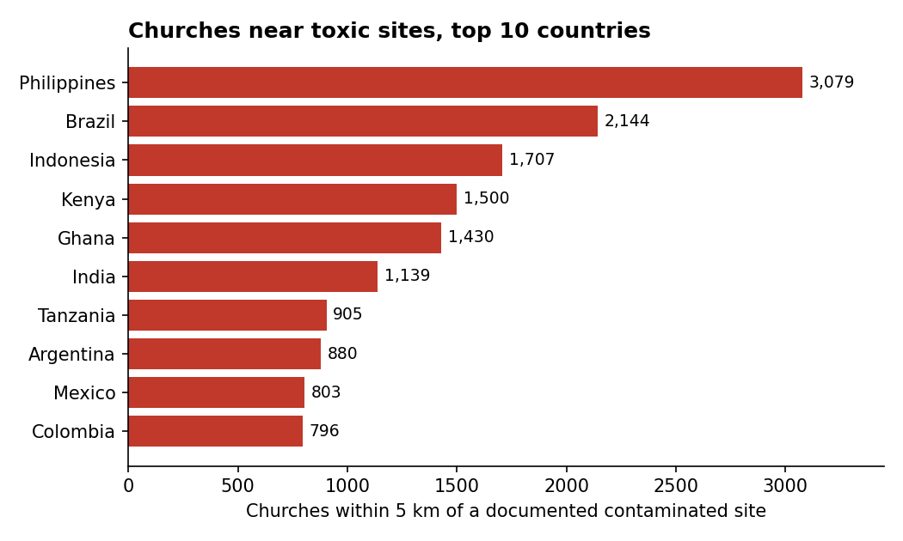

It isn't only schools. Across 40 countries, tens of thousands of churches sit next to documented contaminated sites — and the people who lead them could help.
A recent Center for Global Development working paper showed that more than 250,000 schools in developing countries sit within 5 km of a documented contaminated site. A natural question is whether schools are special, or whether this is simply where people — and the institutions that serve them — happen to be. So we looked at another building communities gather around: the church.
Using OpenStreetMap data on roughly 220,000 Christian churches across 40 countries, we find that 18,199 of them — about one in twelve — sit within 5 km of a documented contaminated site, and 2,615 are within 1 km. Lead is by far the most common pollutant nearby. The map below shows every one of them.
Use the layer control (top-right) to toggle the 1–5 km churches, the contaminated sites, and 5 km buffer rings. Click any marker for details. Proximity is not confirmed exposure.
Childhood lead exposure permanently lowers cognitive function, and there is no safe level — but the harm is not only to children's brains. Lead is also a leading cause of heart disease. A 2023 analysis in The Lancet Planetary Health attributed about 5.5 million adult deaths from cardiovascular disease in 2019 to lead exposure — roughly 90% of them in low- and middle-income countries — and put the total global cost at around US$6 trillion, or 6.9% of world GDP (Larsen & Sánchez-Triana, 2023). Lead raises blood pressure and hardens arteries, which is how a metal absorbed in childhood and through adult life becomes a mass killer.
Children remain especially vulnerable: that same analysis estimated 765 million IQ points lost in under-fives in a single year, and roughly one in three children worldwide already carries an elevated blood-lead level (UNICEF & Pure Earth, The Toxic Truth, 2020). Causal studies in several of these countries — Mexico, Kenya, Indonesia — find that living near lead-handling sites measurably reduces children's test scores. Mercury, arsenic, and other heavy metals near these sites do similar harm.
The pattern for churches looks just like the one for schools. Industry, housing, and the buildings where people gather concentrate in the same crowded, under-regulated urban areas. A church is not near a toxic site because anyone chose to put it there; it is near a toxic site for the same reason a school or a home is.
Five countries account for most of the affected churches within 5 km: the Philippines (3,079), Brazil (2,144), Indonesia (1,707), Kenya (1,500), and Ghana (1,430). Of the churches we can classify by denomination, the largest groups within 5 km are Catholic (about 4,500), other Protestant and independent churches (about 6,100 — led by Pentecostal, Baptist, Evangelical, and Adventist congregations), and Anglican (about 210). Where OpenStreetMap carried no denomination tag we inferred it from the church's name where the name made it clear; about 7,300 churches still could not be classified.

This matters beyond the church building itself, because faith organisations educate millions of children near these same sites. In the school-census data behind the main paper, 10,890 Catholic or Anglican schools sit within 5 km of a documented contaminated site, and 2,003 within 1 km. The Catholic and Anglican communions are among the largest non-state education providers in the developing world.
Churches cannot fix industrial pollution. But they are trusted local institutions with reach that governments often lack — and in Flint, Michigan, faith leaders and teachers were among the first to press the case that something was wrong with the water. Three modest roles stand out: awareness (telling families near a site how to reduce exposure — hand-washing, keeping toddlers off contaminated soil, blood-lead testing); pressure (asking local authorities for soil and water testing around their buildings and schools, which is cheap and rarely done); and screening locations for nearby industry before building new schools and clinics.
Church locations come from OpenStreetMap (Christian places of worship), downloaded via the Overpass API for 40 countries. Each church is matched to the nearest documented contaminated site in Pure Earth's Toxic Sites Identification Program, using the same great-circle proximity method as the parent paper. Denomination comes from OpenStreetMap where tagged; where it was missing, we inferred it from the church's name using a multilingual keyword match, for names with a clear signal only. Full code, data, and a longer methods note are in the GitHub repository.
Caveats. These numbers measure proximity, not exposure. OpenStreetMap under-maps rural buildings and covers Christian places of worship only (no mosques, temples, or gurdwaras), and the contaminated-site database itself captures only a fraction of real sites — so every count here is a lower bound. This is a quick companion analysis, not a peer-reviewed paper.